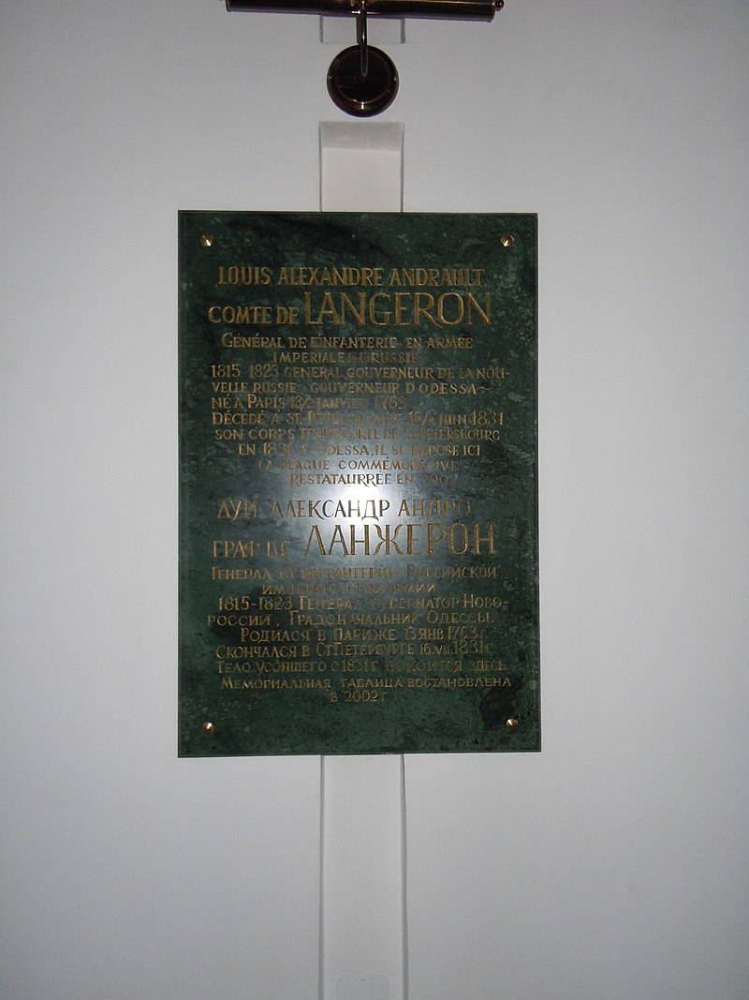
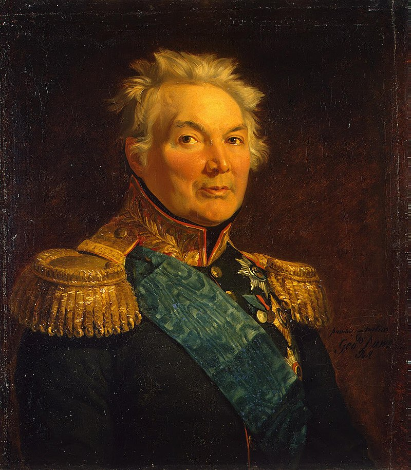
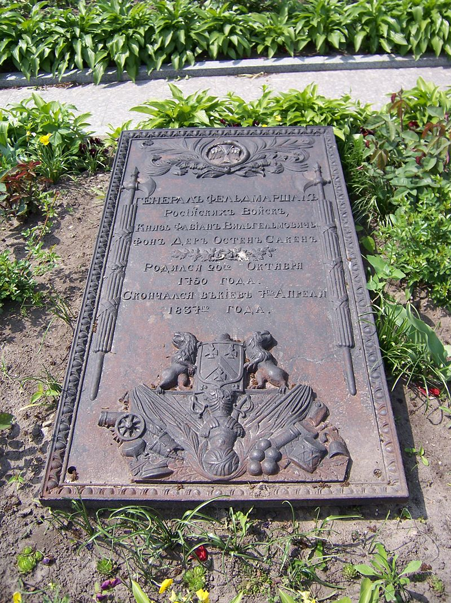
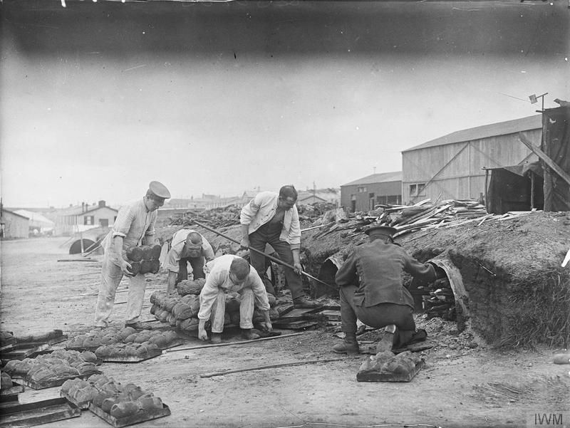

새로운 전쟁의 준비 (6) - 빵을 굽는 군대와 굽지 않는 군대
게시: 2023-11-20T06:30:09+09:00
랑제론을 비롯한 슐레지엔 방면군 소속 러시아군 장교들의 감정이 좋지 못하다는 이야기는 금방 러시아군 총사령관 바클레이에게까지 들어갔습니다. 바클레이도 보헤미아 방면군 소속으로서 오스트리아 슈바르첸베르크의 밑으로 들어가야 하지만, 정작 자기 자신도 그게 싫어서 휘하 병력이 보헤미아로 들어간 뒤에도 끝까지 현지로 떠나지 않고 최대한 라이헨바흐에서 버티고 있는 처지였습니다. 바클레이는 동병상련의 감정도 있고 해서, 보헤미아로 떠나기 직전 랑제론을 불러 '짜르께서는 랑제론 당신의 능력과 역할을 주목하고 계신다'라는 정도의 격려의 말을 전했습니다. 그런데 이게 뜻밖의 효과를 냈습니다. 구체적으로 무슨 말을 들었는지는 모르겠으나, 랑제론은 바클레이와의 인터뷰 이후 자신이 블뤼허의 부하라기보다는 일종의 감시인으로 슐레지엔 방면군에 배정된 것이라고 생각하게 된 모양이었습니다. 덕분에 인생이 고달파진 사람이 있었으니 랑제론 사령부에 파견 나와 있던 프로이센군 연락 장교 알브레히트(Friedrich Albrecht von Ende) 중령이었습니다. 그의 임무는 뭔가 구체적인 작전이 벌어질 때마다 블뤼허의 뜻을 랑제론에게 명확하게 전달하는 것이었습니다. 전투보다는 분명히 쉬운 일이었는데도 알브레히트 중령은 이 쉬운 임무 수행에 큰 어려움을 겪어야 했습니다. 랑제론이 블뤼허의 작전 하나하나에 대해 마치 감독관처럼 딴지를 걸고 늘어지면서 저항했던 것입니다. 랑제론은 많은 경우에 있어 블뤼허의 작전 명령이 월권이라고 생각했고 짜르의 뜻에 반하는 것이라고 비난했는데, 프로이센군 측에서 보면 거의 공공연한 반란으로 간주될 정도였습니다.

(많이 보시던 랑제론의 초상 대신, 이번에 보시는 초상은 1791년 러시아에서 대령으로 있던 비교적 젊은 시절의 랑제론의 초상입니다. 그는 원래 혁명 발발 직전인 1788년 프랑스군에서 대령으로 승진했었고, 혁명 직후에 망명을 떠난 러시아에서도 그 계급을 인정받아 시베리아 척탄병 연대의 대령으로 채용되었습니다. 그러니까 그 이후에 장군이 되고 승진을 거듭한 것은 어디까지나 그의 능력으로 한 것이지 귀족이라는 특권과 연줄을 이용한 것은 아니었습니다.)

(랑제론은 부르봉 왕가 복위 이후에 잠깐 프랑스로 귀국했었으나, 곧 러시아에 완전히 정착을 하여 오데사와 헤르손의 총독직을 맡았고 오데사의 번영을 위해 많은 노력을 했습니다. 지금도 오데사에는 그의 이름을 딴 거리가 있고, 그의 묘지는 오데사의 성모 승천 성당(Assumption of the Blessed Virgin Mary Cathedral)에 있습니다. 사진이 그 묘패입니다.) 블뤼허 본인은 분명히 자신의 하급자에 불가한 랑제론이 그런 적대적 태도를 보이는 것에 대해 크게 의아하게 생각했습니다. 당연히 블뤼허도 랑제론에 대한 감정은 더욱 나빠졌습니다. 블뤼허의 참모인 폰 노스티츠(Johann Nepomuk von Nostitz)는 자신의 일지에 이렇게 적었습니다. "랑제론은 블뤼허와 말이 통하는 사람이 아니었다. 태생이 프랑스인인 그는 그 혈통에 따르는 성격과 그가 젊은 시절 얻은 프랑스적인 사회 경험에서 비롯된 버릇을 고집했다. 그는 그의 과거 전투에 대해 시시콜콜 이야기하는 것을 좋아했고 자신이 이제 뭘 할 거라고 떠들었지만 막상 행동을 취할 때가 되면 동공이 흔들리고 결정을 주저했다. 그의 생각과 행동에는 정열과 인내심이 부족했다. 그 두 가지는 좋은 지휘관이 꼭 갖추어야 할 덕목이라고 블뤼허가 생각하는 것이었으므로, 블뤼허는 '랑제론은 내게 필요하지도 내가 좋아하지도 않는 사람'이라고 말했다." 원래 동맹국이라고 해도 언어와 문화, 관습이 다른 타국 사람과 함께 일하게 되면 경계심이 드는 것이 당연합니다만, 그래도 서로 공통의 대의를 위해 열심히 노력하는 모습을 보다보면 서로 친해지기 마련입니다. 그런데 블뤼허와 랑제론은 이런저런 편견과 오해가 겹치다보니 그와는 정반대로 가면 갈 수록 서로를 혐오하게 되었습니다. 블뤼허와 똑같이, 랑제론도 블뤼허 및 그의 프로이센 부하들에 대한 평가가 가면 갈 수록 더 나빠졌습니다. 랑제론이 프로이센군 수뇌부와 조금 교류를 해보니, 프로이센군에서 가장 중요한 인물은 블뤼허와 그의 세 부하였습니다. 그 세 부하란 그나이제나우, 뮈플링 대령, 그리고 우리에겐 다소 생소한 골츠(Goltz) 대령이었습니다. 랑제론은 자신의 회고록에 이 인물들에 대해 나름대로 평가를 해놓았는데, 요약하면 블뤼허와 그나이제나우에 대해 매우 신랄한 평가를 해놓았습니다. 먼저 블뤼허에 대해서는 삼국지에 나오는 장비처럼 평가를 해놓았습니다. 블뤼허는 칠순이 넘은 나이에도 정신과 육체에 활력이 가득한 사람이라고 평가했으나, 단적으로 평가하자면 나이값 못하고 방탕한 술주정뱅이 경기병에 불과하다고 썼습니다. 심지어는 젊은 사람이라고 해도 봐주기가 어려운 단점을 모조리 갖추고 있다고 매우 박하게 평가했습니다. 하지만 동시에 용맹한 군인이자 열렬한 애국자이고, 솔직하고 충직한 성격으로 그런 단점을 덮고 있다고 좋은 평가도 해놓긴 했습니다. 무엇보다, 블뤼허는 병사들에게 자신감을 주는 방법과 병사들이 자신을 좋아하게 만드는 방법을 알고 있다고 평가했고, 그런 성격 덕분에 심지어 러시아군 사병들도 그를 좋아한다고 써놓았습니다. 뿐만 아니라 블뤼허는 활동력이 좋아 항상 말 안장에 올라 있었고 전투 현장에서의 직관력(coup d’oeil)이 뛰어났고, 특히 그 누구보다 용감하다고 평가했습니다. 그러나 지휘관으로서의 능력은 무척 제한적으로서 전략적 사고 능력이 없었고 지도에서 자신의 위치를 찾을 줄도 몰랐으며 작전 계획을 짤 능력도 없다고 평가했습니다. 랑제론이 보기에 블뤼허도 자신의 그런 단점을 잘 알고 있었고, 그래서 머리를 써야 하는 모든 업무는 자신의 부하 3명에게 모조리 맡겼다고 써놓았는데, 이는 랑제론의 눈이 정확한 것이었습니다. 그 3명의 부하 중 가장 중요한 인물이었던 그나이제나우에 대해, 랑제론은 똑똑하고 용감하며 재능있는 군인이지만, 인성이 매우 더러운 사람이라는 다분히 개인적인 악평을 써놓았습니다. 그나이제나우는 자만심이 강하여 남이 자신의 말에 토를 다는 것을 용납하지 못하는데다 불같은 성격에 무자비함까지 갖춘 인물로서, 같은 독일인들에게도 오만하고 고압적인 태도를 취했으므로 대부분의 사람들이 그를 싫어했는데, 실제로 그는 그런 취급을 받아 싸다고 평가했습니다. 더 나아가 망명귀족 랑제론은 그나이제나우에 대해 매우 위험한 꼬리표를 달아놓았습니다. 그가 독일 선동가들과 교수들의 영향을 많이 받은 자유주의자로서 프로이센 국왕을 싫어하는 것이 역력했으며, 그런 점에서 그나이제나우는 그의 국왕과 그의 조국에 매우 위험한 인간이라고 평가한 것입니다. 반면, 랑제론은 병참감인 뮈플링 대령이 똑똑함과 능력에 있어 그나이제나우와 맞먹는 인재였으나 오만한 그나이제나우와는 달리 부드럽고 친화력이 있는 사람라고 꽤 좋은 평가를 내놓았습니다. 그러면서도 그나이제나우와 뮈플링은 슐레지엔과 작센을 잘 알고 있었으므로 1813년 작전에 큰 도움이 되었으나, 이 둘은 프랑스에 대해서는 잘 몰랐으므로 프랑스에서의 전투에는 큰 도움이 되지 못했다고 적었습니다. 제3의 인물인 골츠 대령은 정치적 임무를 맡은 백작인데, 그나이제나우와 뮈플링에 버금가는 재능을 가진 사람이라고 짧게 평가했습니다. 랑제론은 그 셋 이외의 다른 블뤼허의 참모들에 대해서도 모두 재능과 용기가 넘치는 사람들이라고 칭찬을 했지만 대신 겸손함을 몰랐고 도저히 참기 어려울 정도로 뽐내기를 좋아했다고 악평도 잊지 않았습니다. 이렇게 랑제론은 프로이센군 장교들과의 감정이 좋지 못했는데, 랑제론에 따르면 그 이유는 크게 2가지, 하나는 자신이 프랑스인이기 때문이었고, 다른 하나는 이들의 오만함과 멍청함 때문이었습니다. 그는 프로이센인들이 7년 전쟁 때의 프로이센만 기억할 뿐 1806년의 프로이센은 기억하지 못했다는 매우 함축적인 표현을 남겼습니다. 그나마 다행인 것은 랑제론과 함께 블뤼허 밑에 배속된 주요 러시아 지휘관이었던 자켄(Fabian von der Osten-Sacken)은 프로이센인들과의 사이가 그다지 나쁘지 않았다는 점이었습니다. 그는 유능하고 용감한 군인이지만 성미가 급하고 다루기 어려운 부하라고 소문이 난 인물이었습니다. 뮈플링은 그런 소문을 듣고 걱정했지만, 의외로 블뤼허는 그와 괜찮은 관계를 유지했습니다. 이는 자켄이 블뤼허에 대해 들은 바가 전혀 없어 선입견이 없었고 무엇보다 자켄이 원래 독일계로서 독일어가 모국어였기 때문이었습니다. 블뤼허도 자켄이 매우 신뢰할 수 있고 용감하고 결단력 있으며 적에 대한 판단을 내리는데 있어 신중하다고 좋은 평가를 내렸습니다.

(자켄 장군입니다. 그가 1813년 당시 이미 61세로서 나이가 많은 편이었는데도 계급은 다소 낮은 편이었던 이유는, 제4차 대불동맹전쟁 때 상관인 베니히센과 알력을 겪은 뒤 1807년 6월 항명죄로 유죄 판결을 받아 군에서 쫓겨난 경력이 있기 때문이었습니다. 그는 1812년에야 복귀하여 제3 수비군에서 군단을 지휘했었습니다. 전쟁이 끝난 뒤인 1821년 백작 작위를 받았고 1832년에는 그 전 해의 폴란드 반란을 진압한 공로로 대공(Prince, Fürst)에 봉해졌습니다.)

(원래 에스토니아 태생이던 자켄은 1837년 키에프에서 죽었고, 지금도 거기에 그의 묘가 있습니다. 우크라이나가 러시아와 전쟁을 치르며 대러시아 감정이 매우 나빠진 상황에서, 키에프에 있는 러시아 장군의 묘비를 키에프 시민들이 어떻게 생각할까요? 그런데 자켄은 에스토니아 태생의 독일계 인물이므로 어떻게 생각하면 러시아 장군이라고 보기도 좀 그렇습니다. 유럽사는 이렇게 복잡합니다.) 한편, 블뤼허도 이런 러시아군 부하들을 거느린 것이 매우 불편했습니다. 그는 하르덴베르크에게 주구장창 편지를 보내 프로이센군은 프로이센군끼리 독자적으로 싸우게 해달라고 국왕을 설득하라고 졸라댔습니다. 그의 주장에 따르면 러시아군과의 합동작전이 비효율적인 이유는 '러시아군이 프로이센군에게 바라는 것이 너무 많다'는 것이었습니다. 이건 당시 러시아군이 '해방군으로 온 손님인데 대접이 시원찮다'는 마음을 어느 정도 가지고 있었기 때문이었습니다. 가령 프로이센 군단들은 각각 2개소의 야전 제빵소를 마련하고 병사들의 빵을 직접 구우라는 명령을 받았습니다. 그러나 러시아 군단들에게는 야전 제빵소가 없었습니다. 이들이 흙으로 야전 오븐을 만들고 자신의 빵을 직접 구우라는 명령을 거부하고 뻔뻔스럽게도 그냥 더 맛있고 더 깨끗한 독일식 빵을 공급해달라고 요구했기 때문이었습니다. 춘계 작전 때 슐레지엔에 러시아군이 처음 진격해왔을 때부터 러시아군이 현지 주민들을 약탈하는 것을 막기 위해서 프로이센 병참 장교가 러시아군에 할당되어 러시아군의 보급을 도와준 것이 계속 이어진 것이었습니다. 이런 보급 문제뿐만 아니라, 작전에서도 러시아군은 특별 대우를 요구하는 경우가 많았습니다. 블뤼허는 특히 러시아 근위대와 러시아 중기병대는 다른 모든 부대들이 기진맥진 소진된 이후에도 마치 탄약상자 같은 애지중지 취급을 바란다고 불평했습니다.

(이 사진은 제1차 세계대전 당시 영국 원정군의 야전 제빵소 모습입니다. 100년 전 나폴레옹 시대와 얼마나 달라졌을까요? 의외로 많은 차이가 있었습니다. 저 사진 속 오븐은 어떻게 보면 굉장히 원시적으로 보이지만 Aldershot Pattern, Mk II라는 제식명까지 붙인 대량 생산 오븐이었습니다. 핵심은 저 오븐이 반원형으로 둥글게 말아접은 2장의 강철판으로 제조된 것이라는 점입니다. 그 위에 단열용 흙을 덮었지요. 저 속에 먼저 장작불을 때고, 나무가 다 타서 재가 되면 그 재를 긁어낸 뒤 뜨거운 오븐의 여열로 빵을 구웠습니다. 약 0.9kg (2 파운드)짜리 빵 54개를 한꺼번에 구울 수 있었습니다. )
그럼에도 블뤼허는 러시아군과의 관계에서 진취적인 모범을 보이는 노력을 보여주었습니다. 그는 러시아군과 형제 같은 조화를 형성하는 것을 목표로 삼고 러시아군이 열의를 가지고 싸우지는 않더라도 최소한 마지못해 싸우는 모양새가 되지 않도록 노력했습니다. 부하들은 여기는 독일이니 러시아군은 독일식을 따라야 한다고 주장했지만 그는 프로이센군이 러시아군에게 맞추어 주어야 한다고 대인배적으로 지시했습니다. 프로이센군이 동맹군의 존경을 쟁취해내기 위해 가장 어려운 임무와 가장 거친 행군로를 배정받아야 하고, 모든 공격에서 앞장을 서고 공로는 러시아군에게 돌려야 한다고 지시한 것입니다. 이에 대해 원래부터 부하 사병들을 아꼈고 또 그런 만큼 블뤼허를 싫어했던 요크는 반발했으나, 블뤼허와 사이가 그다지 좋지 않았던 뮈플링도 그 지시에 대해서는 맞는 정책이라며 지지했습니다. 이렇게 연합군은 많은 어려움을 안고 있음에도 어떻게든 전쟁 준비를 잘 마쳐가고 있었습니다. 과연 나폴레옹쪽 사정은 어땠을까요? Source : The Life of Napoleon Bonaparte, by William Milligan Sloane Napoleon and the Struggle for Germany, by Leggiere, Michael V https://en.wikipedia.org/wiki/Louis_Alexandre_Andrault_de_Langeron https://de.wikipedia.org/wiki/Fabian_Gottlieb_von_der_Osten-Sacken https://www.pinterest.co.uk/pin/the-british-army-on-the-home-front-1914-1918--373728469062677605/